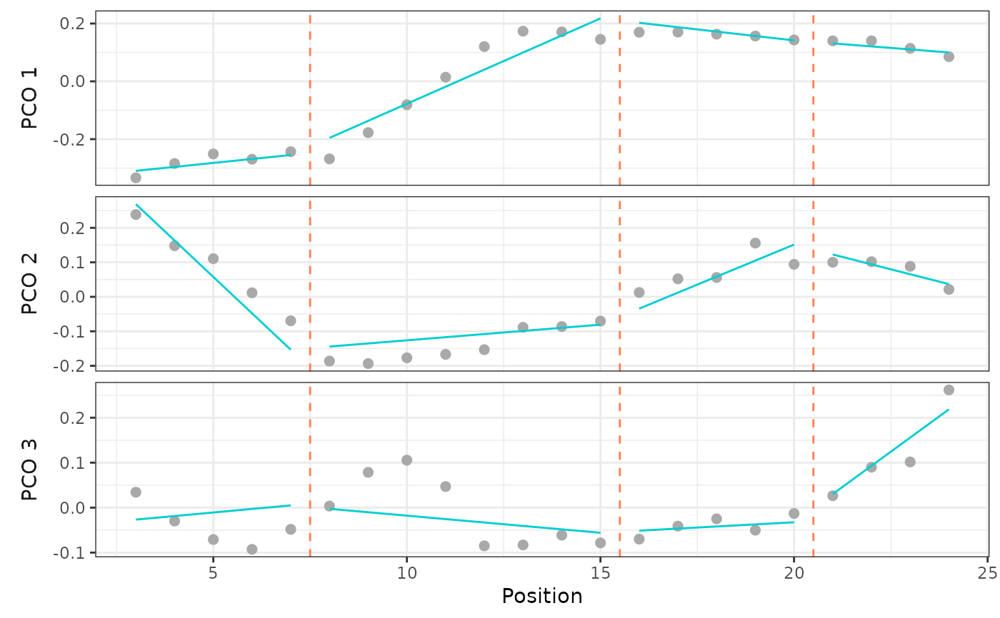
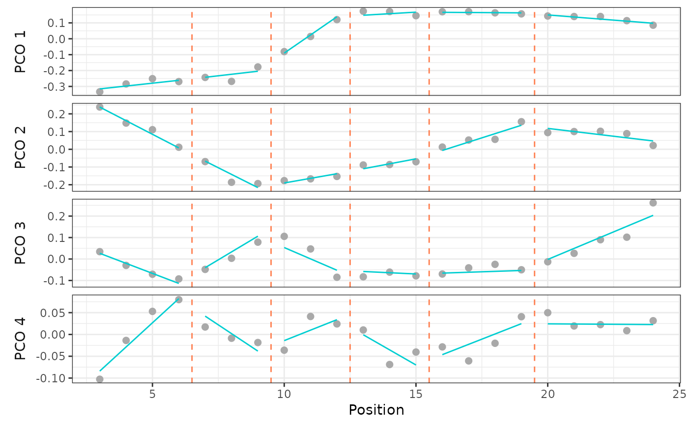

modelperf() computes model performance statistics in the form of \(R^2\) measures for a given combination of breakpoints.
Usage
modelperf(x, ...)
# S3 method for class 'regions_pco'
modelperf(
x,
scores,
modelsupport = NULL,
criterion = "aic",
model = 1,
bps = NULL,
cont = TRUE,
...
)
# S3 method for class 'regions_sim'
modelperf(
x,
scores = NULL,
modelsupport = NULL,
criterion = "aic",
model = 1,
bps = NULL,
cont = TRUE,
...
)
# S3 method for class 'regions_results_single'
modelperf(x, scores = NULL, ...)Arguments
- x
a
regions_pcoobject, the output of a call tosvdPCO(), or aregions_results_singleobject, the output of a call tocalcmodel().- ...
ignored.
- scores
numeric; the indices of the PCO scores for which fit statistics are to be computed.- modelsupport
a
regions_modelsupportobject, the output of a call tomodelsupport(). Whenxis aregions_pcoobject, eithermodelsupport,criterion, andmodelmust be supplied orbpsandcontmust be supplied. See Details.- criterion
string; the criterion to use to select the best model for which breakpoints are to be displayed when
modelsupportis specified. Ignored otherwise. Allowable options include"aic"to use the AICc and"bic"to use the BIC. Abbreviations allowed. Default is"aic". Whenxis aregions_pcoobject, eithermodelsupport,criterion, andmodelmust be supplied orbpsandcontmust be supplied. See Details.- model
numeric; for which model among the best as determined bycriterionshould fit statistics be computed. 1 is the best model, 2 the second best, etc. Default is 1. Whenxis aregions_pcoobject, eithermodelsupport,criterion, andmodelmust be supplied orbpsandcontmust be supplied. See Details.- bps
numeric; a vector of breakpoints for which model fit should be computed. Whenxis aregions_pcoobject, eithermodelsupport,criterion, andmodelmust be supplied orbpsandcontmust be supplied. See Details.- cont
logical; whether to fit a model that is continuous (TRUE) or discontinuous (FALSE) at the breakpoints supplied tobps. Default isTRUE. Whenxis aregions_pcoobject, eithermodelsupport,criterion, andmodelmust be supplied orbpsandcontmust be supplied. See Details.
Value
A regions_perf object containing the breakpoints of the specified model, the univariate \(R^2\) and adjusted \(R^2\) statistics for each PCO score, and the multivariate \(R^2\) and adjusted \(R^2\) statistics.
Details
modelperf() operates on a single model identified by breakpoints and whether the model is continuous or not. When x is a regions_pco object, the model is selected either as the best model in the supplied modelsupport object (where "best" is determined by the arguments to criterion and model) or as specified by the user using the arguments to bps and cont. When x is a regions_results_single object, the breakpoints and model form are determined based on the supplied object.
See also
modelsupport() for assessing model support using information criteria; calcmodel() for fitting a single segmented regression model; plotsegreg() for plotting the results of a single segmented regression model.
Examples
data("alligator")
alligator_data <- process_measurements(alligator,
pos = "Vertebra")
# Compute PCOs
alligator_PCO <- svdPCO(alligator_data)
# Evaluate model performance (R2) given supplied
# breakpoints for a continuous model
modelperf(alligator_PCO, scores = 1:3,
bps = c(7, 15, 20), cont = TRUE)
#> Breakpoints: 7, 15, 20
#>
#> - Univariate:
#> R² Adj. R²
#> PCO.1 0.963 0.954
#> PCO.2 0.888 0.862
#> PCO.3 0.636 0.550
#>
#> - Multivariate:
#> R² Adj. R²
#> 0.902 0.879
plotsegreg(alligator_PCO, scores = 1:3,
bps = c(7, 15, 20), cont = TRUE)

## See also `?calcmodel` for use with a single model
# Fit segmented regression models for 1 to 7 regions
# using PCOs 1 to 4 and a continuous model with a
# non-exhaustive search
regionresults <- calcregions(alligator_PCO,
scores = 1:4,
noregions = 7,
minvert = 3,
cont = TRUE,
exhaus = FALSE,
verbose = FALSE)
regionresults
#> A `regions_results` object
#> - number of PCOs used: 4
#> - number of regions: 1, 2, 3, 4, 5, 6, 7
#> - model type: continuous
#> - min vertebrae per region: 3
#> - total models saved: 112
#> Use `summary()` to examine summaries of the fitting process.
# For each number of regions, identify best
# model based on minimizing RSS
bestresults <- modelselect(regionresults)
# Evaluate support for each model and rank
supp <- modelsupport(bestresults)
# Evaluate model performance (R2) for best model
# as chosen by BIC
modelperf(alligator_PCO, scores = 1:4,
modelsupport = supp,
criterion = "bic", model = 1)
#> Breakpoints: 6, 9, 12, 15, 19
#>
#> - Univariate:
#> R² Adj. R²
#> PCO.1 0.992 0.988
#> PCO.2 0.975 0.964
#> PCO.3 0.892 0.849
#> PCO.4 0.772 0.681
#>
#> - Multivariate:
#> R² Adj. R²
#> 0.968 0.956
# Plot that model for the first PCO score
plotsegreg(alligator_PCO, scores = 1:4,
modelsupport = supp,
criterion = "bic", model = 1)

## See `?simregions` for use with simulated data